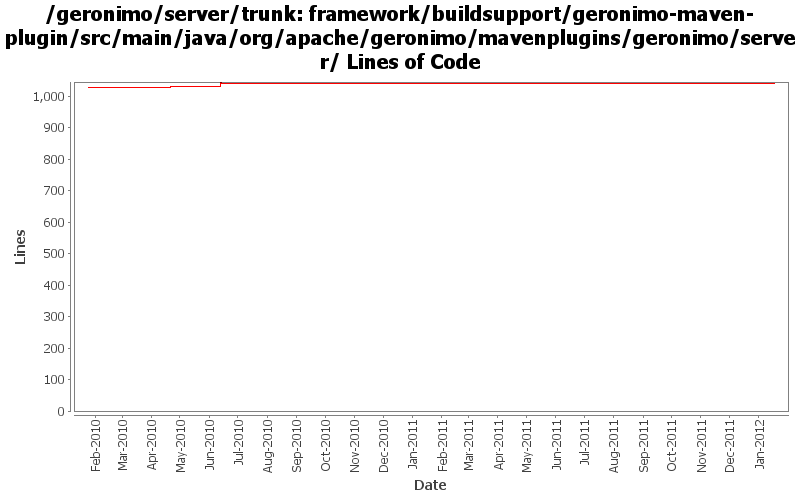

[root]/framework/buildsupport/geronimo-maven-plugin/src/main/java/org/apache/geronimo/mavenplugins/geronimo/server

| Author | Changes | Lines of Code | Lines per Change |
|---|---|---|---|
| Totals | 16 (100.0%) | 31 (100.0%) | 1.9 |
| genspring | 2 (12.5%) | 16 (51.6%) | 8.0 |
| gawor | 8 (50.0%) | 10 (32.3%) | 1.2 |
| djencks | 6 (37.5%) | 5 (16.1%) | 0.8 |
adapt installer mojo to new lib jars
4 lines of code changed in 1 file:
GERONIMO-6251 work on geronimo-maven-plugin. Use jmxrmi connector from karaf, add DeployerGBean in (slightly inappropriate) j2ee-deployer
1 lines of code changed in 1 file:
GERONIMO-5382 Enable the max permsize configuration in geronimo-maven-plugin
3 lines of code changed in 1 file:
GERONIMO-5382 Enable the max permsize configuration in geronimo-maven-plugin
13 lines of code changed in 1 file:
1) attempt to wait for server to stop and 2) decrease polling frequency to see if the server is running
1 lines of code changed in 3 files:
look geronimo-main.jar instead of karaf.jar
5 lines of code changed in 1 file:
GERONIMO-5213: javaagent updates
1 lines of code changed in 1 file:
geronimo-maven-plugin updates: 1) fix shutdown, and 2) fix app client
0 lines of code changed in 2 files:
get geronimo-maven-plugin working a bit better
3 lines of code changed in 1 file:
GERONIMO-5045 geronimo-maven-plugin works at least a bit
0 lines of code changed in 4 files: